系统设置
功能列表
- 同步日历
- 默认日历视图
- 一周开始
- 默认提醒时间
- 全天事件提醒
- 帐户设置
- 好友列表
交互视频及规则
如果无法观看视频，请安装最新版的Safari
动态效果:
- 效果左滑：新页面从右方滑出替代原有页面《----
- 效果右滑：新页面从左方滑出替代原有页面 -----》
总体规则
- 从日历页进入设置页面为效果右滑
- 从任意上级页面进入次级页面都为效果左滑
- 从任意次级页面返回到上级页面都为效果右滑
各功能备注
同步日历
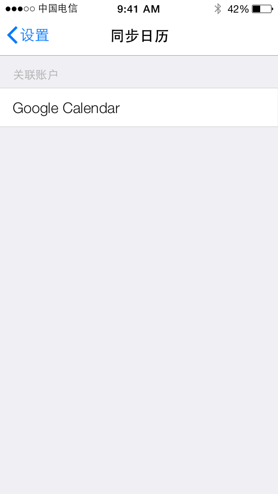
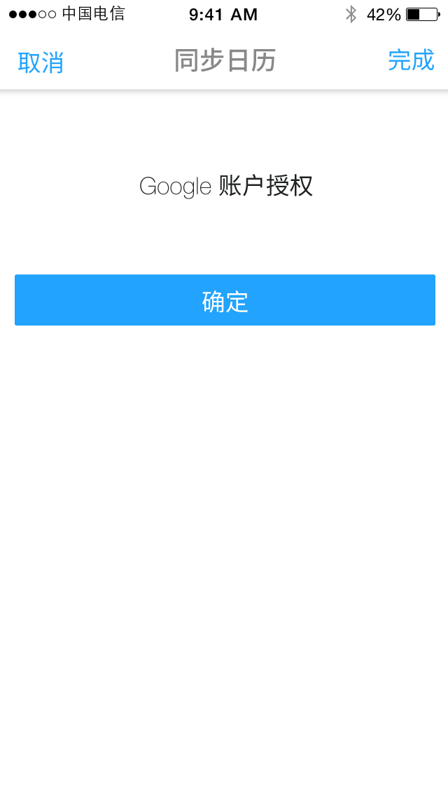
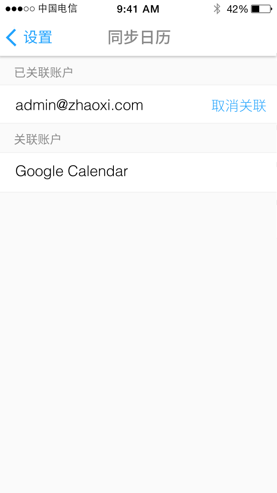
- 点击“google calendar”进入授权流程，授权成功后该邮箱地址出现在账户列表内
- 点击“关联”及“取消关联”切换账户关联状态
- 抓取同步邮箱相关信息
默认日历视图
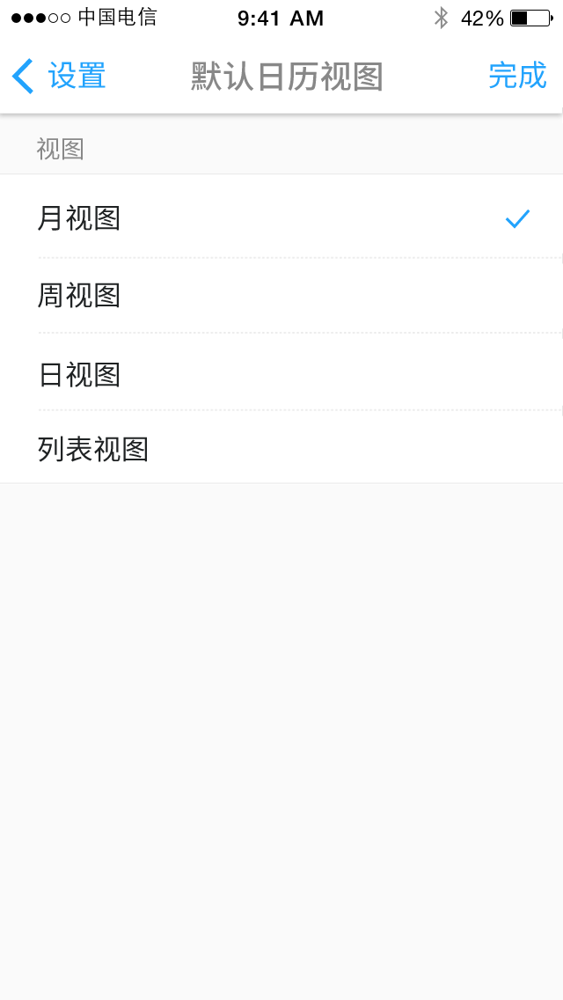
- 点击选项“日”“周”“月”“列表”视图即完成设置并右滑返回设置页面
- 设置成功后，返回日历主页面即为设置视图
一周开始
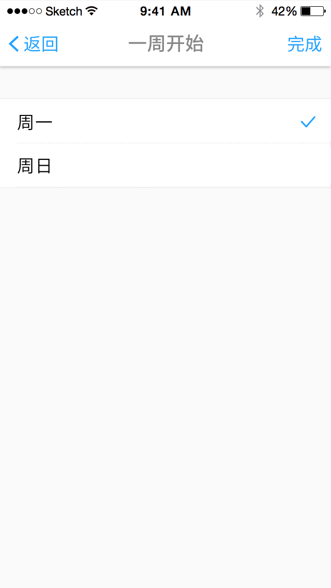
- 点击“周一”“周日”即完成设置并右滑返回设置页面
- 设置成功后，将仅影响”月视图“（周一至周日的排列顺序及月视图日期的整体”前移“或”后移“一天）
- 若日期”前移“”后移“导致该月显示日期不完整（31号已经为月视图最后一格，并且默认一周开始从”周一“变为”周日），将增加月视图行数
默认提醒时间
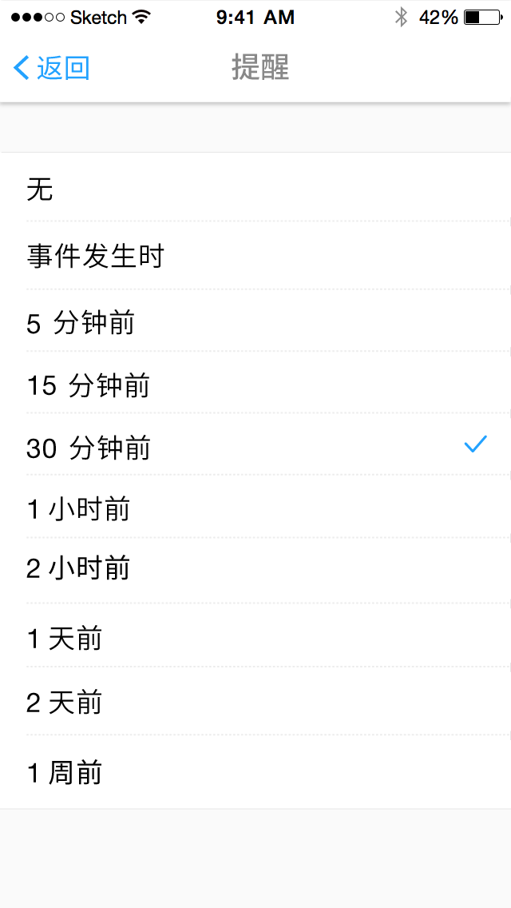
- 默认提醒时间设置为单选设置（区别于完整添加）
- 点击选项“15分钟”“30分钟”及其他选项即完成设置并右滑返回设置页面
- 事件添加的提醒时间调整为设置的时间
帐户设置
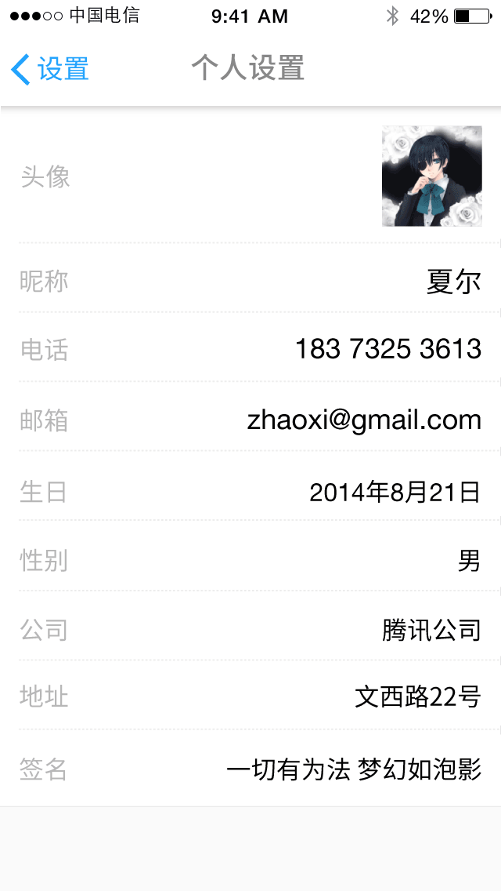
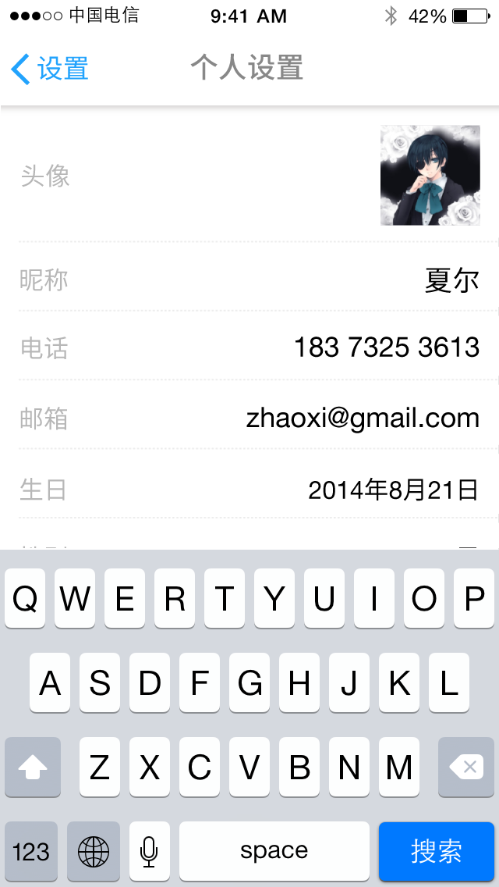
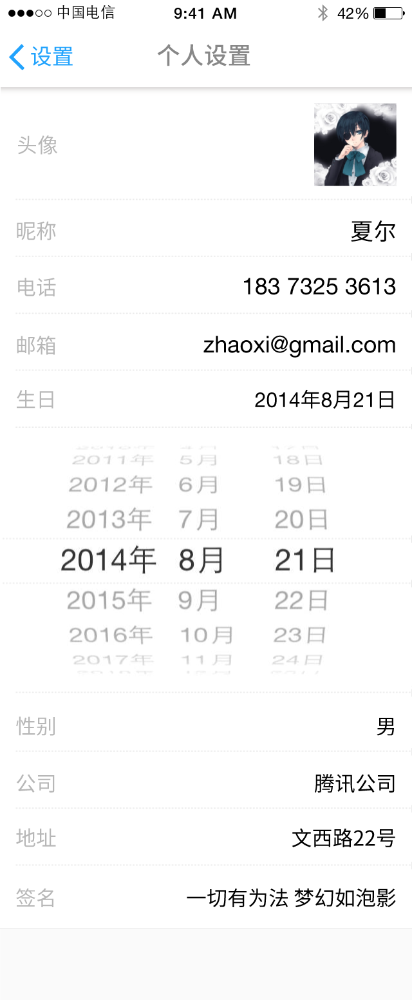
- 账户设置使用与微信个人设置的布局方式
- 点击头像即弹出选择相片，更换头像
- 注册信息不可修改
- 若以手机号注册，电话区域无法修改
- 若以手机号注册，并且关联邮箱，邮箱处显示关联邮箱且不可修改
- 若以邮箱注册，邮箱处显示关联邮箱地址，否则显示注册邮箱地址（可能一开始大多人的注册邮箱并不是常用邮箱，各种qq邮箱不雅观，此处可忽略）
- 若手动输入邮箱地址，则询问是否要关联该邮箱
- 点击生日向下展开系统日期设置控件
- 点击可手动输入区域，系统弹出的文字输入框若遮盖该输入区域，那么该区域将自动上移至输入框上方，以便显示输入内容
好友列表
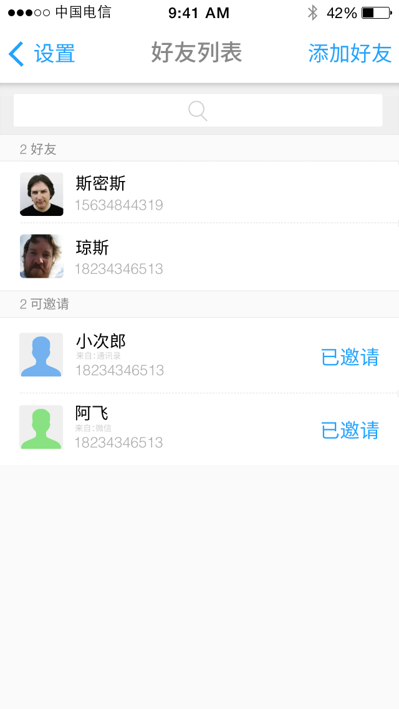
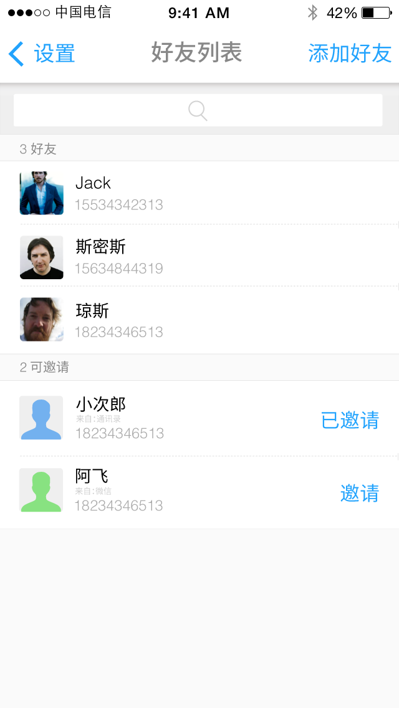
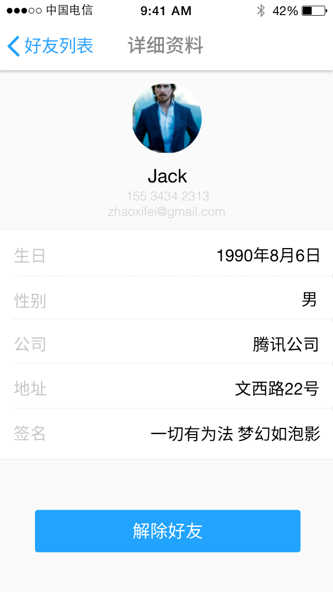
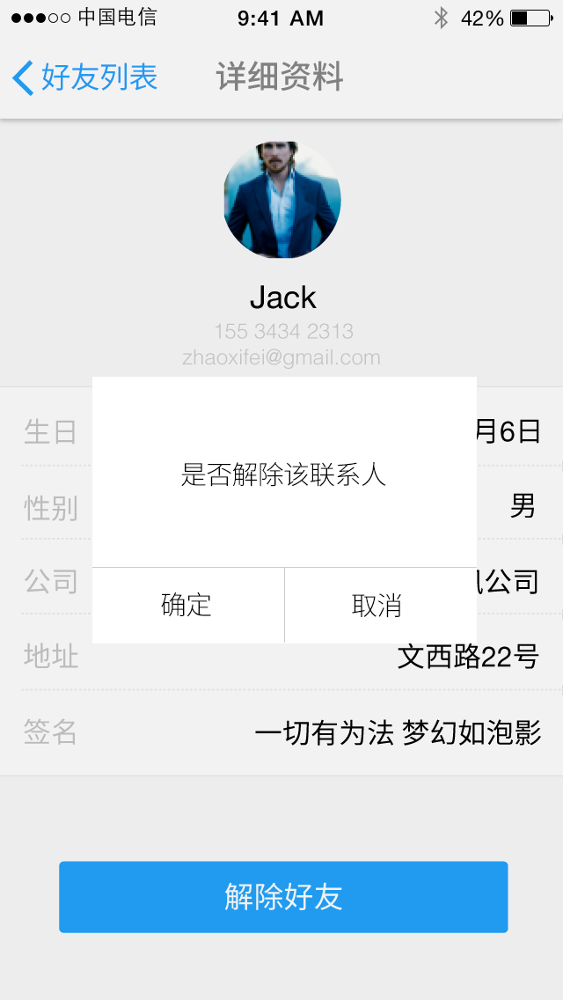
好友
- 可点击好友进入好友详情查看，好友详情内
- 点击头像放大头像
- 点击解除好友，确认后立刻右滑返回好友列表页面
- 解除好友后好友从列表中删除
可邀请
- 点击邀请后通过短信的方式邀请通讯录，微信，邮箱等好友加入
- 被邀请的好友使用被邀请的联系方式加入后（电话，邮箱），自动添加对方为好友，且在双方消息内显示好友已接受
- 通过算法将不同的可邀请人进行优先级排序（如曾经通过邮箱或者微信参与过日程的用户）
- 可邀请人无详情页面
- 点击“邀请”后，“邀请”显示为“已邀请”，__天后若被邀请人尚未加入，则“已邀请”变回“邀请”
＊可邀请的人的头像为系统默认头像，过于单调，若没有头像，则与通讯录无差别。是否能够按照“微信”“邮箱”“通讯录”三种不同的头像为不同的可邀请对象设置默认头像。或其他有趣的方式。同时告知用户该用户的来源。